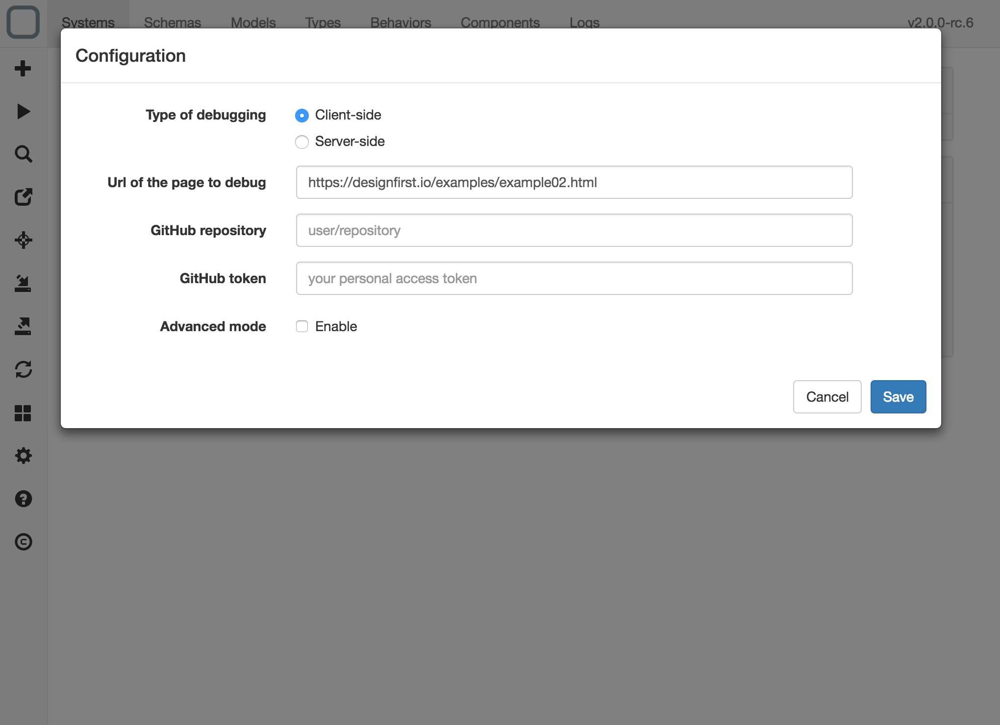
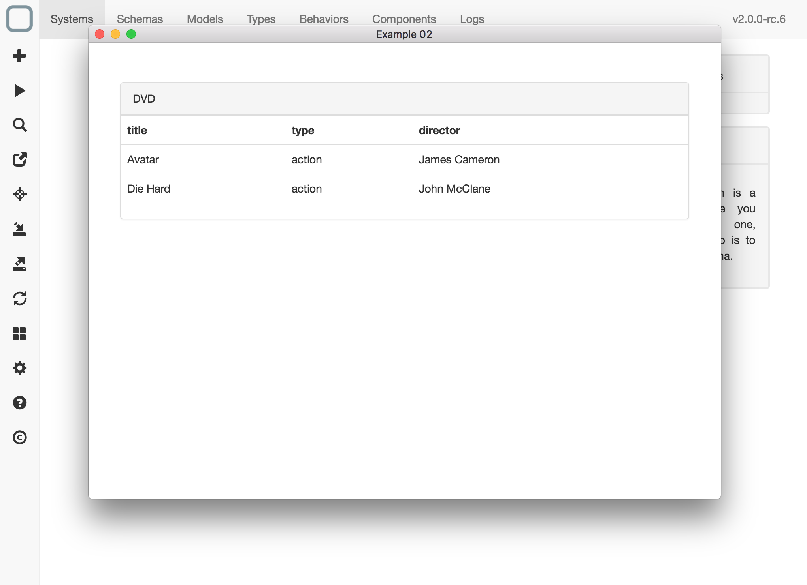
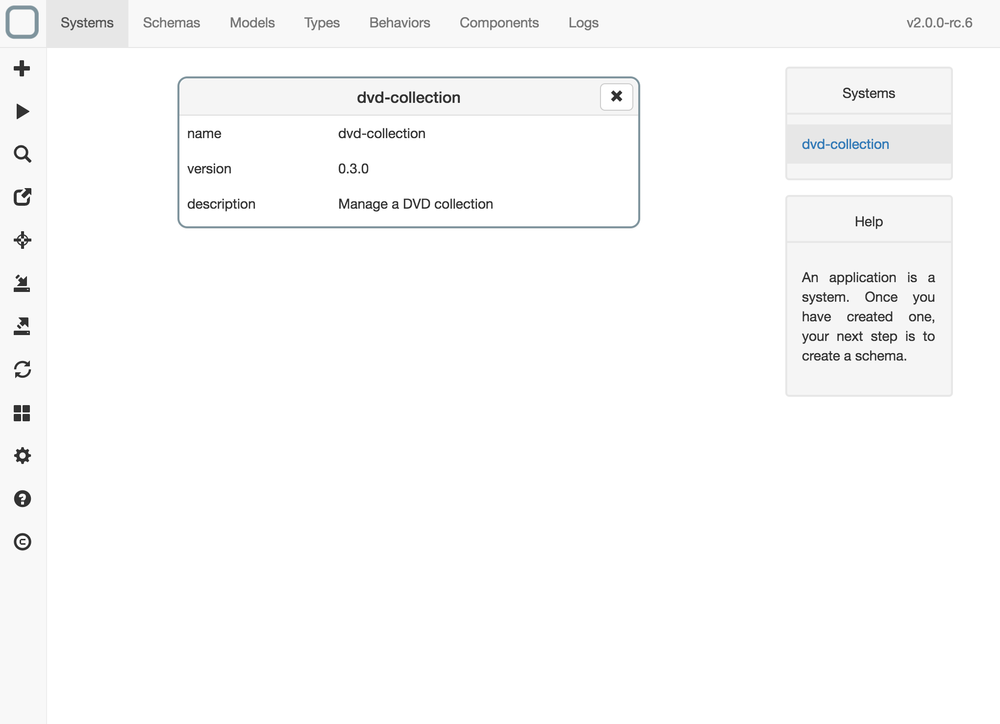

Design a remote client system
Version compatibility
This feature is only available on the Windows 10, macOS and HTML5 versions of System Designer.
With System Designer you can import a system of a running system on a remote server. You can then update the system from System Designer. All modifications to the system will be then send to the running app.
Enable design mode on your running system
To enable design mode on your application, just add mode-admin extension in the HTML of your page that contains your system:
<link href="https://cdn.jsdelivr.net/npm/system-runtime@3.0.2/extensions/mode-admin.json" type="application/json" rel="system">
Set the url of the page
- In System Designer, on the left toolbar, click on the 'configuration' icon. A configuration panel is then shown.
- Set the url of the page you want to debug (example: https://designfirst.io/examples/example02.html).

Design your system
- Then on the left toolbar, click on the 'design' icon (the square with a pen icon). Your application is then opened in a new page.

- Now click again on the same icon. A message is then shown to inform you that a system has been found and it is ready to be imported.

- Click on Import button. The system is then imported.

Now you can explore your system.
All modifications to the system in System Designer will impact the running system.